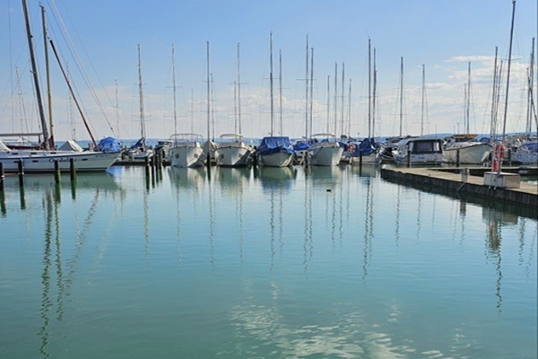
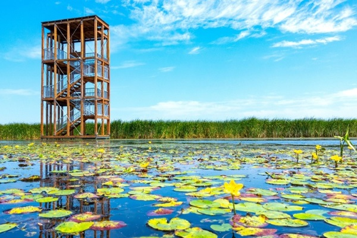

Balaton
A Balaton Magyarország legnagyobb tava, amely a Dunántúli-középhegységben található. A tó hossza 77 km, szélessége 1,3-14 km, felülete 600 km², átlagos mélysége 3,3 m. A Balaton a Zala folyótól kapja a legtöbb vizet, és a Sió csatornán keresztül folyik le. A Balaton partján számos üdülőhely, város és falu található, amelyek vonzzák a turistákat és a nyaralókat. A Balaton éghajlata enyhe, a nyár meleg és napos, a tél hideg és csapadékos. A Balaton élővilága gazdag és változatos, többek között halak, madarak, növények és kagylók élnek a tóban és a környező területeken. A Balaton történelme is érdekes, hiszen a tó már az őskorban is lakott volt, és számos nép és kultúra hagyott nyomot a partján. A Balaton a magyar művészet és irodalom egyik legkedveltebb ihletforrása is.
Tisza-tó
A Tisza-tó Magyarország második legnagyobb tava és legnagyobb mesterséges tava, amely a Tisza folyó felduzzasztásával jött létre 1973-ban. A tó területe 127 km², amelyen nyílt vízfelületek, szigetek, holtágak és sekély csatornák váltakoznak. A tó élővilága gazdag és sokszínű, több mint 200 halfaj, 43 kagylófaj, 200 madárfaj és 600 növényfaj él itt. A tó körül számos üdülőhely, város és falu található, amelyek különböző programokat és szolgáltatásokat kínálnak a látogatóknak. A tó két keréken is körbejárható, hiszen egy 65 km hosszú kerékpárút vezet a partján. A tó legnépszerűbb látnivalója a Poroszlón található Tisza-tavi Ökocentrum, ahol Európa legnagyobb édesvízi akváriuma és interaktív kiállításai várják a vendégeket. A Tisza-tó egy igazi vízi paradicsom, ahol mindenki megtalálhatja a számára megfelelő kikapcsolódási lehetőséget.
Szelidi-tó
.jpg)
A Szelidi-tó egy természetvédelmi terület, amely a Tisza folyó felduzzasztásával jött létre 1973-ban. A tó területe 127 km², amelyen nyílt vízfelületek, szigetek, holtágak és sekély csatornák váltakoznak. A tó élővilága gazdag és sokszínű, több mint 200 halfaj, 43 kagylófaj, 200 madárfaj és 600 növényfaj él itt. A tó körül számos üdülőhely, város és falu található, amelyek különböző programokat és szolgáltatásokat kínálnak a látogatóknak. A tó két keréken is körbejárható, hiszen egy 65 km hosszú kerékpárút vezet a partján. A tó legnépszerűbb látnivalója a Poroszlón található Tisza-tavi Ökocentrum, ahol Európa legnagyobb édesvízi akváriuma és interaktív kiállításai várják a vendégeket. A Szelidi-tó egy igazi vízi paradicsom, ahol mindenki megtalálhatja a számára megfelelő kikapcsolódási lehetőséget.